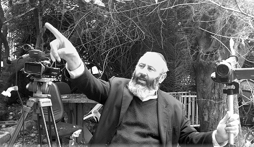

The Letter That Changed My Life
Michael Behagen used to be a well-known movie director in the Israeli entertainment industry. He made movies and documentaries and was immersed in the secular world, until the day that he received a letter from his son…
Prepared for publication by Sholom Ber Crombie

FAMILY BACKGROUND
I was born in Tel Aviv. My parents, of blessed memory, did not live a Jewish observant lifestyle, but they did keep many of the mitzvos. Both came from families of rabbanim. My father survived the Holocaust, although he did not live through the concentration camps. He spent exactly two weeks under the Nazis and decided he had to escape.
My father’s family is from the town of Katowitz, and the name “Behagen” is the Germanic form of “Ben HaGaon.” Katowitz is in Upper Silesia. There, the family dealt in textiles and was directly involved with the German market. Until today, I don’t know just which “gaon” the name refers to, but my grandmother Miriam, of blessed memory, would say it was for the Gaon of Vilna.
One Shabbos afternoon, my father unexpectedly sat down at the kitchen table and, without preamble, he spent three hours telling me the story of his escape from Poland in 1939 when he was 16. He told me about his adventures in Lithuania, Russia and Palestine, and his enlisting in the British army so he could return to Europe and search for his family. That was the only time in his life that my father opened up to me in that way.
He died a few months later from a heart attack at the age of 58, and I was left with all the questions I never asked and which will forever remain unanswered.
Out of my father’s extended family, some moved to Canada, some to Eretz Yisroel, and the rest – the family of my grandfather, Aharon Yosef Behagen – remained in Europe, believing that the Nazi evil was a passing nightmare and things would return to normal.
My father had four brothers and sisters. All of them, including his father, perished. Some died of starvation, others were burned when the hospital in the Lodz ghetto was set on fire, and some were killed by gas in Chelmno. My grandmother survived Auschwitz.
My father fled Lodz as soon as the Germans entered. He could not bear the thought of being under their control. He crossed the temporary border that was created when Poland was divided between Germany and the Soviet Union, and went to Lithuania. There he worked as a chauffeur for a doctor. He was only 16, but he knew how to drive because the family in Katowitz had a car and their driver secretly taught him how to drive. This is what later enabled him to remain alive.
In 5701/1941 he arrived in Palestine and a few months later enlisted in the Jewish brigade of the British army. He spent part of the war in Africa and then in Italy. At the end of the war he tried locating his family. He gradually learned that nobody survived. Then came the news from Eretz Yisroel that in the newspaper column in which people looked for relatives, a woman by the name of Miriam Behagen was looking for her family.
He went to see her. She was living in a small room in Lodz after she tried returning to the huge family home that her father had owned. The Poles, who had taken it over when the Jews left, threw her out and threatened that if she returned they would finish off what Hitler had begun.
He was accompanied by representatives of the Jewish committee and by dozens of other people who had heard about the upcoming reunion of mother and son. He entered the room. He was 22 and the last time she had seen him, he had been 16. She did not recognize him. In order not to shock her, he did not tell her who he was. He told her he was a soldier from Palestine.
“I had a son, Shlomek. He escaped at the beginning of the war. I am afraid he did not survive. I don’t know what happened to him. Maybe he reached Palestine.”
“It’s me! I’m Shlomek!” he said in a voice choked with emotion.
She didn’t believe him.
Twelve years earlier, on a cold night in Katowitz, a pile of burning coals had fallen on him and had left a scar on his neck. It was only when he showed this scar to her that she realized that this was indeed her son; miraculously, one of her children had survived the war. She moved to Eretz Yisroel and joined her sister’s family. He arrived a month later.
I look at the picture of the young couple, my parents, in Eretz Yisroel at the end of the 40’s. They look ready to conquer the world. Now, they are buried side by side in the cemetery in Nachalas Yitzchok. My mother died when my daughter Mizmor was six months old. She has my father on one side of her and Saba Michael on her other side, my great-grandfather for whom I am named. Rabbi Michael Mizrachi was from Tbilisi. On his gravestone it says that he was a teacher and had hundreds of students.
THE FIRST SHABBOS
Although we did not keep all mitzvos, ours was a very traditional home. I was sometimes the butt of jokes by my friends in high school when we went out to eat, and they rebelliously ordered ham while I ordered beef. Now I know how absurd it is to sit in a treif restaurant and think that you are doing the right thing by ordering beef, but as a child it seemed different to me. I believed I was doing the right thing.
I also know that although there are those who try to paint a picture of a huge chasm between the “secular” and us, this does not express the feelings of the secular public. There are a handful of people, some of them with senior positions in the media, who control the public dialogue with the goal of exacerbating our differences. Yes, there is a lot of fear, since many of them have no idea what Judaism is about.
I remember the first Shabbos that we kept. Excuse me for describing it this way, but if someone had been watching, he would have been convinced it was a mourner’s meal. Two hours earlier I had put the car keys in the drawer, I shut the phone, shut the computer, shut the television, and felt as though I was shutting my oxygen line. I was like a child whose favorite toy was stolen due to no fault of his own. That is what Friday night was like, and it was only the following day that I got it:
You don’t have all those gadgets, so start looking around. What do you see?
That was the first time in years that I discovered, to my surprise, that I had a wife and two children living with me. I had found it hard to notice them before; although I am convinced they were there all along. From then on, gradually, Shabbos turned into something we looked forward to. It was one example out of many of something the irreligious public misses out on in the hustle and bustle of shopping and entertainment.
THE LETTER THAT CHANGED MY LIFE
The story of how our family became religious begins with a letter that I got from my son Shachar Shmuel (my son with my first wife). Two years earlier, while he was in high school, he began becoming religious. In his letter, he presented me with an ultimatum: As long as you live with a gentile woman, I do not want to see you.
The letter came as a shock to me. True, my wife hadn’t completed a halachic conversion, but to me she was a kosher Jew. A proper conversion did not concern me at the time. Her tremendous interest in Judaism and Jewish practices, and her saying to me, “Wherever you go, I go,” (which led to her decision to leave France and live with me in Eretz Yisroel in the middle of a wave of terror attacks which had thousands of Jews running away) all satisfied me. I did not consider an official stamp of approval that important, although she herself was bothered by this fact.
Upon receiving this letter, our household was thrown into turmoil. On the one hand, I wanted to toss out the brazen ultimatum. At the same time, my wife and I knew that a negative response meant estrangement from him. His demand that we have a Jewish home touched something deep in my neshama and wasn’t far off from our worldview at the time.
My wife Ruth and I decided to agree to his demand. Then we met with Rabbi Karelitz of B’nei Brak, and I showed him the letter. Instead of consoling me, he advised me on how to console my son!
Today, my wife addresses women, showing them a movie I made of her story and talks to them about a life of meaning. She has done this in Eretz Yisroel as well as at Chabad houses in France and has been very successful. Religious women get chizuk from her. For those who aren’t there yet, the encounter with her gets them thinking.
The meeting with the Litvish rav, Rabbi Karelitz, made a strong impression on me. I expected a cold person to lecture me. Instead, I remember his warm demeanor. Instead of consoling me for my son’s rebellious behavior, he asked: What can you do to stop aggravating him? I was confused at first. What about my rights as the father? Today I understand what I had a hard time understanding back then, which, as always, comes through the children.
The intense upheaval led us to a proper, halachic conversion.
A CHABAD SCHOOL
It seemed to us at the time that we just happened to end up in Chabad, but I have since learned that nothing is by coincidence. We lived on a secular kibbutz and we knew we could no longer live there if we wanted to adopt a religious lifestyle. For example, on Rosh Hashanah we walked to Beer Yaakov with our two children in strollers. It took over an hour and we did this because there was no shul on the kibbutz. We did not yet know the Halacha about t’chum Shabbos.
We moved to Rishon L’Tziyon and rented a home in the center of the city. It was in the middle of the year and we began looking for a preschool. The schools we visited were cold, unfriendly places. They told us how problematic it was to switch children to a new school in the middle of the year.
When we went to the Chabad school, the door opened wide. They were so warm. Instead of emphasizing the problems, they accentuated the positive and the wonderful opportunities they provided. The next day, our five-year-old Mizmor and four year old Nevo spent their first day in the Chabad school.
Towards the end of the week, I suggested to my wife that instead of going to the religious shul we had gone to before, we should visit the Chabad shul, a ten-minute walk from our house. I did not know a soul there, but my wife recognized some of the mothers of the children from the preschool, as well as one of the teachers. The children played in the yard together with other children they knew from school. We enjoyed it, and it left us with a good feeling about Chabad.
The transformation took place on Lag B’Omer. We went to the parade where Rabbi Dubrawski, the rav of the Chabad community in Rishon L’Tziyon, told me that he saw me in shul. He invited me for a Shabbos meal. I was happy to accept; ultimately, the invitation and the meal led to major changes. We were captivated by the warmth, the simcha, the wisdom and the depth. I remember consulting with a non-Chabad rabbi who had told me that we weren’t making the right choice. He made it sound like Chabad consists of dreamers who believe their Rebbe is Moshiach, but something told us that things went much deeper.
In Chabad I became acquainted with a positive approach that I admire: learning with encouragement rather than with rebuke. During my davening in recent years at the shul, I have definitely made numerous mistakes, but nobody ever came over to me to correct me. The most daring thing a person did was to come over and adjust the t’fillin on my head. The rabbi, who had to point out that we don’t daven while wearing both a tallis and a hat, did so very gently. It is only when you get into things that you find out that Lubavitchers are very stringent in their mitzva observance. Out of the two possible ways of doing this, grimly or happily, they choose simcha.
Shiurim in Chassidus opened a new world to me. As soon as I heard the first shiurim, I began to think about how to spread this further through video and the Internet. I started a live-feed website and broadcast dozens of live classes with an archive of hundreds of classes, farbrengens and gatherings. Lecturers include: Rabbis Yeshavam Segal, Yitzchok Ginsburgh, Moshe Gruzman, Shneur Zalman Ashkenazi, Motty Gal, Yair Calev, Mordechai Dubrawski, Yaakov Horowitz, and Yeshaya Goldberg. Some of the shiurim are on the Internet and have been viewed by thousands of people. They aren’t all Lubavitchers; after all, the Baal Shem Tov’s mandate to spread the wellsprings doesn’t only apply to Anash.
There was another thing I discovered in Chabad that I love. As opposed to other groups, in Chabad I was never asked about my work in documentaries and film. I am sure there were times that the rabbi would have preferred that the shiur or farbrengen not be recorded so that it would be intimate, personal and direct, but the mandate to spread the wellsprings along with the Rebbe’s general instruction to use technology for this purpose, gives Chabad an openness that I did not see anywhere else.
CHINUCH
One of our sources of great joy is the education of our children. Our daughter attends the Chabad school in Nes Tziyona, and our son is in the Chabad school in Or Malka in Shikun HaMizrach. Hearing them sing a new song that they learned, quoting Pirkei Avos, T’hillim, and Tanya, telling a story from the parsha at the Shabbos table and knowing all the Chassidic holidays gives us tremendous nachas.
An interesting thing happened when we traveled last summer to Montpelier in southern France. Since many Muslims live there and few Jews, we decided to dress differently so as not to stand out. We thought that my six year old and I would wear caps with our tzitzis tucked in and colored shirts. Before our first excursion, which would take us through an Arab neighborhood, I started dressing accordingly, but Nevo refused to part with his kippa and to put his tzitzis in. All my explanations were to no avail, even when I changed my tone to one that was more threatening. He did not give me religious reasons; he simply refused to part with his kippa and tzitzis or to hide them.
A PROUD JEW DRAWS RESPECT
My wife and I decided to make a slight change in our plan. We would wear a kippa, tzitzis out, a white shirt, and a tallis when necessary (on Shabbos). It wouldn’t make sense for a father wearing a colored shirt and a cap to walk with a child wearing a kippa and tzitzis. And that is how we dressed there for a month. We were a Jewish family in a city with half a million people, a city where it is hard to get a minyan even on Shabbos in any of the three shuls.
It’s not that we did not encounter hostile glares on streets populated by Arabs and even hateful looks that said, “How dare you?” but overall, the streets of Montpelier welcomed this Jewish family of four with a smile. Sometimes we noticed Jewish faces. Someone came over to us and exclaimed, “Mazal tov!” Apparently, those were the only words he knew in Hebrew. Someone else said, “Shalom aleichem.” There were waves and encouraging smiles too.
One Motzaei Shabbos, a young couple stood in the entrance to one of the houses after we returned from shul late at night. The woman, who was dressed as a typical Frenchwoman, looked up, smiled at us, and said, “Shabbat Shalom.” We smiled back and returned the greeting even though Shabbos was over. I don’t know whether she lit candles the following week, but I am convinced that I saw a look of longing in her eyes for something that was once close to her. Maybe she will return to it one day.
What did we learn from all this? Two important things: the Rebbe’s words proved true once again. A Jew who yields invites outside attacks and pressure. A proud Jew draws respect. You could say that anti-Semitism is not a reaction to Jews who stand up for their Judaism, but to those who try with all their might to show that they are not different. I’ll admit, I wanted to have that freedom of feeling like anyone else, but it looks as though that chapter of my life is over. We have a role, a mission, whether we want it or not.
The second thing is the power of children and the power of chinuch. Once again, I was taught a lesson by my child. I try to cut corners and they get me back on track. I fall asleep on the job and they wake me up.
THE BIG SURPRISE: CHABAD NIGGUNIM
As someone who grew up in Eretz Yisroel and was very involved in music, playing musical instruments and composition (most of the scores for my movies are my own), when they referred to “Chassidic music” I thought I knew what they were talking about. “Am Yisroel Chai,” “Kol Sasson V’Kol Simcha,” “Adon Olam,” “U’Ba’u HaOvdim.” I enjoyed Chassidic songs, and so when they referred to a “Chassidic niggun” that is what I assumed they were talking about. Then I got to hear Chabad niggunim and realized that my understanding of Chassidic music was rather superficial. I was thrust into a rich and wonderful world. Every niggun is a complete musical creation. A niggun can take you on a trip and you have no idea where it will end. After four years in the world of Lubavitch, every time I hear a niggun, I discover something new. With tremendous love for the subject, a relationship developed between Rabbi Lev Leibman and me. R’ Lev, in addition to being a researcher of niggunim who has published two books on the subject, is a talented flutist.
We got together to play niggunim with him on his flute and me on the piano. Slowly, a musical program emerged. We called it “Quill of the Heart.” Today, we perform all over the country, especially on Chassidic holidays.
Another angle that appealed to me is the clean language and lack of lashon ha’ra (derogatory talk). In the culture that I come from, gossiping is commonplace. You meet with friends, someone utters a poisonous remark about someone else and everybody enjoys it. Needless to say, in the company I presently keep, there is no such thing.
People sometimes ask me whether I miss my former life. The answer is that I haven’t cut my ties with it. I continue to meet with friends and sometimes, when they react with shock towards me, I feel that they are trying to understand, to figure it out.
For most of them, the society, education and values that their children are growing up with, are cause for worry. They are good people who want the best for their children and feel they have reached a dead end. And yet, they don’t see Judaism as an attractive alternative. Some of them are influenced by the negativity in the media and some are very afraid to delve into what lies behind those people in black with beards and strings hanging out of their clothes. They know that living a life of Torah and mitzvos is not simple and requires dedication and sacrifice. They have no idea that you get something wonderful in exchange for your devotion.
I also see the pain in the religious world. I experience the frustration. The Geula is still not here. We have marked over 20 years since Chaf-Ches Nissan and look at where we still are. I meet Lubavitchers who try to get out of the box, to do something different, who try to figure out what the Rebbe wants. I sense that people are ready to hear the message of Geula and we just need to figure out how to make it easily accessible.
THE REBBE: THE SOURCE OF IT ALL
When I first started out in Chabad, we were confused. We did not understand why the image of the Rebbe was gazing down upon us from the wall of every living room, why every date in his life is a Chabad holiday, and why at every farbrengen or shiur his maamarim and sichos are discussed without any attempt to try something different.
Our way of thinking was that a person needs to be able to face G-d without any intermediaries; that a “middleman” can ruin one’s sincerity and purity. Then slowly, mainly through learning Chassidus, upon learning chapter two of Tanya, and after many hours of gazing at the Rebbe’s eyes as they appear in pictures, we finally decided to hang a picture of the Rebbe in our house too. We were starting to catch on.
We began to understand the role of the Nasi Ha’dor, why Hashem “needed” Moshe in order to take the Jewish people out of Egypt, why He invested so much effort in order to convince the man to accept the mission. Does the Creator of the entire world find it difficult to redeem the Jewish people without the help of a person? The connection between us limited human beings and the infinite Creator is complicated, difficult, and sometimes impossible. The tzaddik, the Nasi Ha’dor, is the bridge, the ladder between us. There is his G-dly soul which is connected to the upper spheres and yet, he is among us, smiling and giving dollars for tz’daka. That is where the connection is made.
As soon as you start to appreciate his role and commit yourself to him, you open the door for him to connect you with G-d. You see a person who, beyond his mastery of Torah and beyond the miracles he performs, is a man whose entire life is dedicated to Ahavas Yisroel. He cares not only about his Chassidim but about all the Jewish people and perhaps, all of humanity. When you learn to look at things this way, the connection to the Rebbe is easier and more conciliatory.
We learned to love the Rebbe. The sound of the Rebbe’s voice singing niggunim is sweeter to us than anything. I deeply regret that I was in New York in 5751 and it did not occur to me to visit 770 and get a bracha from the Rebbe. Now I am nourished by pictures and videos, and I avidly listen to stories of those who had yechidus or who were present when the Rebbe shocked his Chassidim with his sicha on Chaf-Ches Nissan.
A few years ago, I created a personal film documentary called “The Letter,” which is a sort of diary that tells the story of our family. I thought that the process we were going through has meaning beyond our personal story and I decided to share it with others. I felt that many people would relate to my story and the movie even helped the process I was going through. It doesn’t just show a beautiful return to Judaism with fireworks. Questions are asked, some of which remain without answers. But the direction of the movie is like that of our new lives and the Jewish home we established – clear and well defined.
PARTING WORDS
Every person needs to do his task based on his abilities, says the Rebbe. Until now, in my early years in Chabad, I carried out my task sort of as a pipeline, through directly transmitting the classes without any interference on my part. Transmitting Torah and Chassidus classes directly to the world, which have the power to transform the world; directing even one farbrengen, is absolutely priceless. There is no substitute for hearing directly from a teacher who teaches about Geula and Moshiach or a mashpia who farbrengs.
Now, however, the time has come to go further with stories from Chumash, p’nimius ha’Torah, stories of the Baal Shem Tov, stories of tzaddikim, Admorei Chabad, longing for Geula, stories of the Seventh Generation, and movies for the gentiles of the world to teach them the Seven Noachide Laws. All this can be conveyed through the medium of movies.
What is good for Anash is not good enough for the outside world. For Anash it is enough to hear or to read about the story of the Alter Rebbe’s release from jail. The outsider needs to experience it live, to see it and hear it. We need to find creative solutions so that the language of movies will be fluent, relevant, competitive and of course, without negatively affecting our values.
We plan on equipping ourselves with the best that technology has to offer, the best scenery, actors, studios and professionals, with one difference. We will be equipped with the one thing that’s hard to beat: eternal truth.
Beis Moshiach. "The Letter That Changed My Life." Beis Moshiach, no. 832 (May 2, 2012).